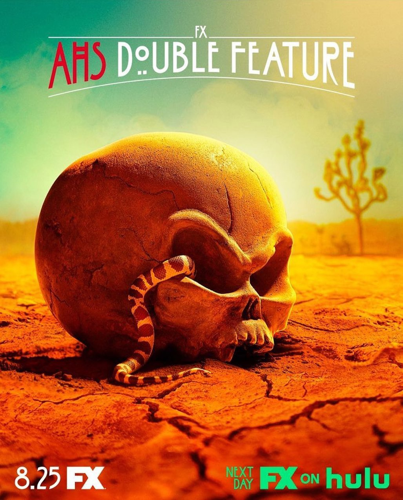

Американська історія жахів: Подвійний сеанс (англ. American Horror Story: Double Feature) — десятий сезон телесеріалу антології жахів каналу FX "Американська історія жахів", створений Райаном Мерфі та Бредом Фальчуком, прем'єра якого відбулася 25 серпня 2021 року.
Спочатку прем'єра планувалася на кінець 2020 року, але була перенесена через перерву виробництва внаслідок пандемії COVID-19.
Акторський склад
Частина 1: Червоний приплив
-
Основний склад
- Сара Полсон — туберкульозна Карен
- Еван Пітерс — Остін Соммерс
- Фінн Віттрок — Гаррі Ґарднер
- Лілі Рейб — Доріс Ґарднер
- Райан Кіера Армстронг — Альма Ґарднер
- Френсіс Конрой — Бель Нуар
- Біллі Лурд — Ларк
- Маколей Калкін — Міккі
- Леслі Гросман — Урсула
- Адіна Портер — Бурлесон
- Анжеліка Росс — хімік
-
Другорядний склад
- Робін Вайгерт — Марта
- Деніс О'Харе — Холден Вон
Частина 2: Долина Смерті
-
Основний склад
- Ніл Мак-Дона — Дуайт Ейзенхауер
- Сара Полсон — Меймі Ейзенхауер
- Лілі Рейб — Амелія Ергарт
- Кайя Гербер — Кендалл
- Ніко Грітем — Кал Камбон
- Рейчел Хілсон — Джеймі Говард
- Анжеліка Росс — Тета
- Коді Ферн — Валіант Тор
-
Другорядний склад
- Крейг Шеффер — Річард Ніксон
- Аліша Сопер — Мерілін Монро
- Майк Фогель — Джон Кеннеді
- Крістофер Стенлі — Шерман Адамс

Промо-постери до 10 сезону Американської історії жахів.
Епізоди
Частина 1: Червоний приплив
- «Cape Fear»
- «Pale»
- «Thirst»
- «Blood Buffet»
- «Gaslight»
- «Winter Kills»
Частина 2: Долина Смерті
- «Take Me To Your Leader»
- «Inside»
- «Blue Moon»
- «Double Feature/Part I: Red Tide»

Виробництво
3 серпня 2018 року серіал був продовжений на десятий сезон, який мав вийти у 2020 році. 26 травня 2020 року 10 сезон було перенесено на 2021 рік у зв'язку з зупинкою виробництва через триваючу пандемію COVID-19. Після переривання співзасновник серіалу Райан Мерфі розповів в інтерв'ю TheWrap, що затримка може потенційно змінити тему сезону, оскільки його початкову ідею потрібно було знімати в теплі місяці року.